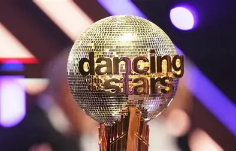

Judges
The judging panel on Dancing With The Stars consists of a group of dance experts who evaluate the performances of the celebrity contestants and their professional dance partners. The judges provide feedback, scores, and critiques based on various aspects of the performances, including technique, choreography, presentation, and overall entertainment value. Here are some of the notable judges who have been part of the show:
- Len Goodman: Len Goodman is a British ballroom dancer and dance judge who served as the head judge on the U.S. version of Dancing With The Stars for many seasons. He is known for his traditional approach to judging and his expertise in ballroom dance styles.
- Carrie Ann Inaba: Carrie Ann Inaba is an American television personality, dancer, and choreographer. She has been a long-time judge on the show, known for her insightful critiques and positive encouragement towards the contestants.
- Bruno Tonioli: Bruno Tonioli is an Italian choreographer and television personality. He is known for his flamboyant style and energetic critiques. Bruno has been a judge on both the U.S. and UK versions of the show.
- Julianne Hough: Julianne Hough is a professional dancer, singer, and actress who has served as a judge on Dancing With The Stars. She brings her experience as a former contestant and champion on the show to her judging role.
- Derek Hough: Derek Hough, Julianne's brother, is also a professional dancer and choreographer who has served as a judge on the show. He is known for his technical expertise and creative choreography.
Each week, the panel of judges—typically made up of seasoned dancers, choreographers, and entertainment personalities—critically evaluates the performances of celebrity contestants paired with professional dancers. After each routine, the judges offer immediate feedback that covers a wide range of elements: technical execution (like footwork, posture, and timing), artistic interpretation (musicality, emotion, and storytelling), and choreography (difficulty, creativity, and how well it suits the dancer’s skill level). Their comments often blend constructive criticism with encouragement, helping contestants grow while keeping the audience engaged. Then comes the scoring: each judge assigns a number from 1 to 10, which contributes to the couple’s overall score. These scores are combined with viewer votes to determine weekly rankings and eliminations. Occasionally, judges also mentor contestants, participate in themed episodes, or cast deciding votes in tie-breaker situations. Their role is not just to critique but to shape the narrative of the competition, celebrate progress, and elevate standout performances with praise and professional insight.
